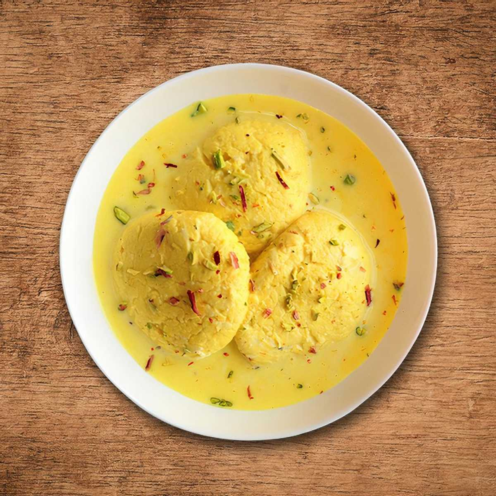

Rasmalai
Ingredients for Rasmalai
- Milk
- Sugar
- Nuts and cardamom
Rasmalai Recipe – Step by Step
- Step 1: Curdle the Milk Boil 1 liter of full cream milk in a deep pan. Once it boils, reduce the flame and add 2–3 tbsp lemon juice (or vinegar) slowly while stirring. The milk will curdle and separate into chenna (curds) and whey.
- Step 2: Strain the Chenna Pour it over a muslin cloth or fine sieve. Rinse under cold water to remove the sourness. Squeeze out excess water and hang it for 30 minutes to remove moisture.
- Step 3: Knead the Chenna Transfer the chenna to a plate and knead it for 8–10 minutes till smooth and soft. Divide and roll into small smooth balls, then flatten slightly into disc shapes.
- Step 4: Cook the Balls in Sugar Syrup In a wide pan, boil 4 cups water + 1 cup sugar to make sugar syrup. Drop the balls into the boiling syrup, cover, and cook on medium flame for 10–12 minutes until they double in size. Let them cool, then gently squeeze them to remove excess syrup (don’t break them!).
- Step 5: Prepare the Rabri Boil 1 liter full cream milk in a heavy-bottomed pan. Stir continuously and reduce the milk to about half. Add 4–6 tbsp sugar, ½ tsp cardamom powder, a few saffron strands, and chopped nuts (almonds, pistachios). Simmer for 5 more minutes and turn off the heat.
- Step 6: Combine and Chill Add the squeezed paneer balls to the warm rabri. Let them soak for at least 2–3 hours, or refrigerate for best flavor. Garnish with extra saffron and nuts before serving.

Poha
Ingredients for Poha recipe
- Poha (flattened rice)
- Green chilies, Curry leaves
- Mustard seeds,Turmeric powder,Salt
- Roasted peanuts , Coriander leaves
- Lemon juice , Oil –
Poha Recipe – Step by Step
- Step 1: Curdle the Milk Boil 1 liter of full cream milk in a deep pan. Once it boils, reduce the flame and add 2–3 tbsp lemon juice (or vinegar) slowly while stirring. The milk will curdle and separate into chenna (curds) and whey.
- Step 2: Strain the Chenna Pour it over a muslin cloth or fine sieve. Rinse under cold water to remove the sourness. Squeeze out excess water and hang it for 30 minutes to remove moisture.
- Step 3: Knead the Chenna Transfer the chenna to a plate and knead it for 8–10 minutes till smooth and soft. Divide and roll into small smooth balls, then flatten slightly into disc shapes.
- Step 4: Cook the Balls in Sugar Syrup In a wide pan, boil 4 cups water + 1 cup sugar to make sugar syrup. Drop the balls into the boiling syrup, cover, and cook on medium flame for 10–12 minutes until they double in size. Let them cool, then gently squeeze them to remove excess syrup (don’t break them!).
- Step 5: Prepare the Rabri Boil 1 liter full cream milk in a heavy-bottomed pan. Stir continuously and reduce the milk to about half. Add 4–6 tbsp sugar, ½ tsp cardamom powder, a few saffron strands, and chopped nuts (almonds, pistachios). Simmer for 5 more minutes and turn off the heat.
- Step 6: Combine and Chill Add the squeezed paneer balls to the warm rabri. Let them soak for at least 2–3 hours, or refrigerate for best flavor. Garnish with extra saffron and nuts before serving.
Dal Bhat
Ingredients for Dal Bhat recipe
- For Rice: Rice – 1 cup (any variety: regular, basmati, or sona masoori) Water
- For Dal :Toor dal, Water Turmeric powder, Salt
- For (Tadka): Oil or ghee, Dry red chili ,Green chili
- Garlic, Onion , Tomato
- Curry leaves , Coriander leaves –
Dal Bhat Recipe – Step by Step
- Step 1: Cook the Rice Rinse 1 cup rice well and soak for 15–20 minutes (optional). Cook with 2 to 2.5 cups water in a pressure cooker or pot until soft. Set aside
- Step 2: Cook the Dal Rinse ½ cup toor dal thoroughly. Pressure cook with 2 cups water, ¼ tsp turmeric, and a few drops of oil. Cook for 3–4 whistles or until soft and mushy. Mash the dal gently once cooked.
- Step 3: Prepare the Tempering (Tadka) In a pan, heat 1–2 tbsp oil or ghee. Add: 1 tsp mustard seeds 1 tsp cumin seeds 1–2 chopped green chilies 6–8 curry leaves 2–3 chopped garlic cloves 1 dried red chili (optional) 1 pinch hing (asafoetida) (optional) (Optional) Add 1 chopped onion and sauté till soft. (Optional) Add 1 chopped tomato, cook till soft.
- Step 4: Mix Dal Add the mashed dal to the tempering. Add salt to taste and a little water if needed to adjust consistency. Simmer for 2–3 minutes.
- Step 5: Serve Pour the dal over hot steamed rice or mix them together. Garnish with fresh coriander and a dash of lemon juice (optional). Serve with papad, pickle, or ghee on top for extra flavor.